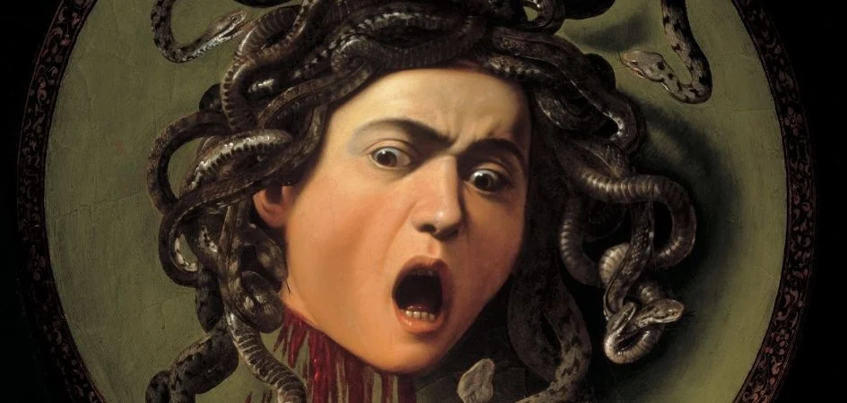
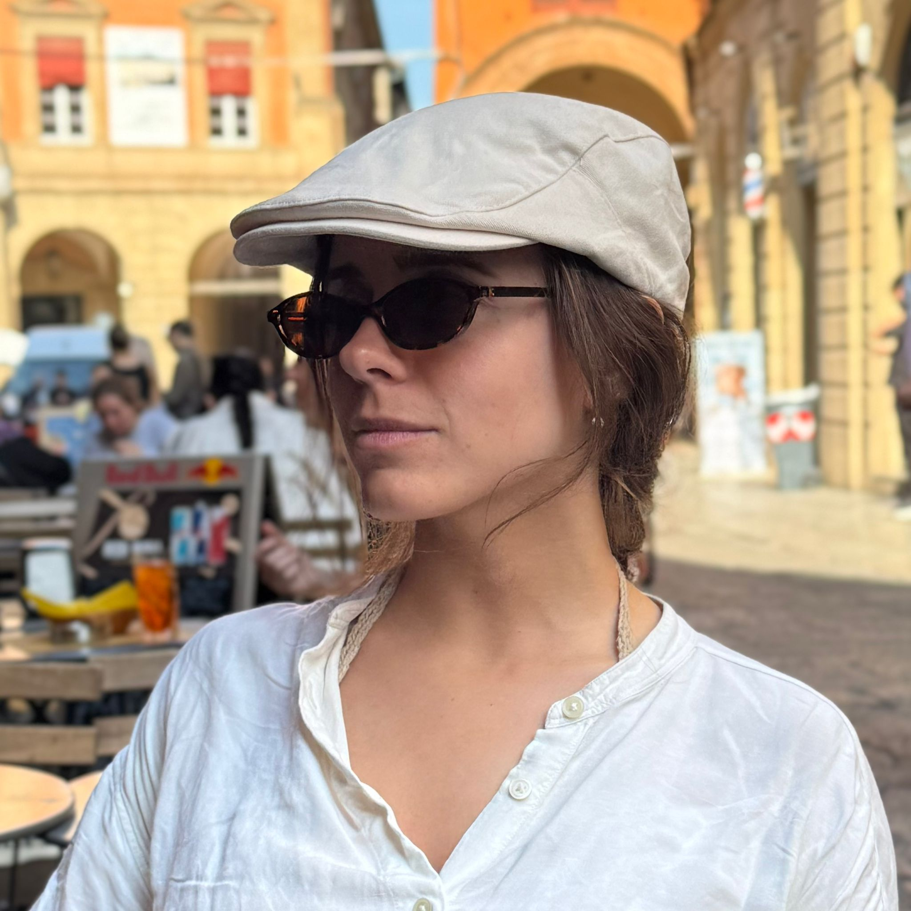

Testa di Medusa
Painting by Caravaggio
Why Medusa by Caravaggio
Medusa by Michelangelo Merisi da Caravaggio is significant for several reasons. It stands as a symbol of Baroque artistic innovation, mythological storytelling, political symbolism, and material experimentation. Painted around 1597–1598 on a ceremonial parade shield, the work represents one of the most dramatic and psychologically intense interpretations of the Medusa myth in European art. As the Uffizi Gallery describes it, “A masterpiece that merges myth, realism, and terror into a single, unforgettable image.”
Despite its artistic and cultural importance, Medusa is often represented in Knowledge Graphs only through basic catalog metadata, with limited semantic depth and few contextual connections.
We selected Medusa for this project because:
It is one of the most iconic works of Caravaggio and widely recognized in global art history;
Its mythological, political, and artistic layers make it ideal for semantic modeling.
While existing descriptions are accurate, there is substantial room to enrich its representation with additional contextual, iconographic, and historical links. The artwork’s hybrid nature (painting + parade shield) provides a unique case for ontology‑based modeling.
Objectives
- To explore the ArCo ontologies using the official SPARQL endpoint in order to extract relevant and meaningful information about the painting;
- To use Large Language Models (LLMs) such as Gemini, Mistral AI and ChatGPT to produce new knowledge and propose RDF triples that could enrich the ArCo Knowledge Graph.
____________________________________________________________________________
Start here ->
Our Team
